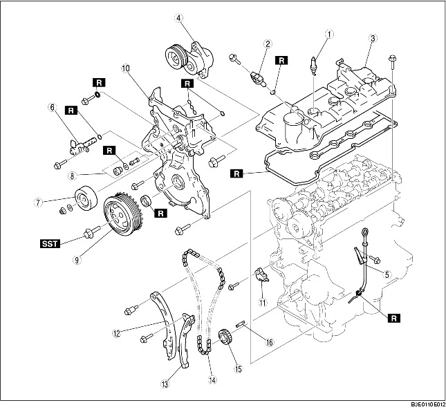

1. Ta isär i den ordning som tabellen anger.

.
1. Säkra medbingarskivan (ATX) eller svänghjulet (MTX) från att rotera med specialverktyget.
2. Ta bort monteringsbulten i vevaxelns remskiva.
1. Demontera oljetätningarna med en spårskruvmejsel.
1. Tryck ner länkskivan på kedjespännaren med en spårskruvmejsel (precisionsmejsel) och släpp kolvlåset.
2. Tryck tillbaka kolven långsamt med länkskivan nedtryckt i den riktning som visas på bilden.
3. Frigör länkskivan när kolven fortfarande är nedtryckt.
4. Rör kolven fram och tillbaka 2-3 mm{0,08-0,11 tum} och sätt i en ungefär 1,5 mm{0,06 tum} tjock wire eller gem där länkskivans hål och spännarens hål överlappar för att fixera länkskivan och låsa kolven.